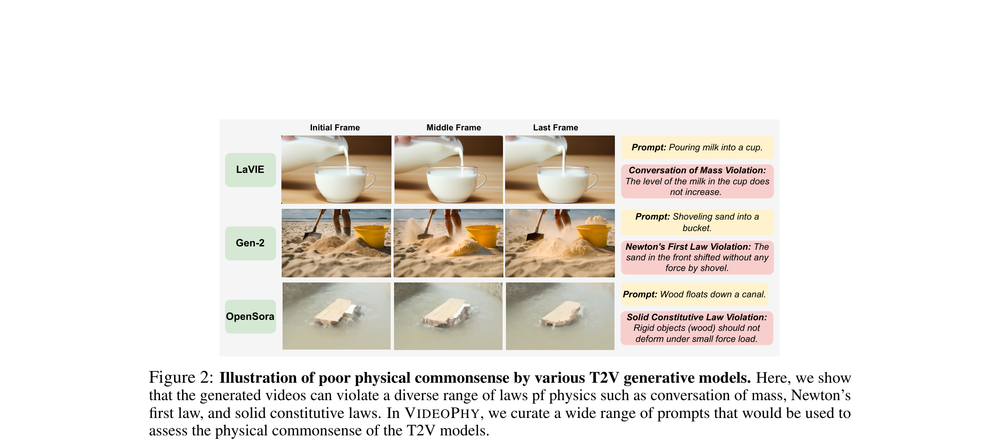

VideoPhy: Evaluating Physical Commonsense for Video Generation
Bansal 等 · 2024 技术报告 · arXiv:2406.03520 v2 · Zotero 3Z6SUJQY
VideoPhy 不问“视频清不清晰”，而问文本描述的物理事件是否真的发生、发生过程是否符合常识；它用面向物理的 prompt、人工判断与自动评估器测 text-to-video 模型。
§1 Introduction：画面逼真为什么仍可能完全不懂物理
FVD、CLIP 相似度和普通视频质量指标能奖励清晰度、运动与提示词相关性，却可能接受“玻璃球向上滚、液体体积凭空变化、刚体自行形变”。若视频模型要被称为 world simulator，语义正确和物理常识必须分开检查。
VideoPhy 构造 688 条人工核验 prompt，覆盖 solid–solid、solid–fluid、fluid–fluid 等材料交互和不同生成难度；人类分别标注 semantic adherence 与 physical commonsense。它还训练 VideoCon-Physics 自动 evaluator，使大规模模型比较不必完全依赖昂贵人工评审。
展开原文 · 评测目标
“assess whether the generated videos follow physical commonsense”
§2 Related Work：为什么模拟器、VBench 和 VLM 裁判都不等于物理真值
把生成视频与物理模拟器比较看似客观，但真实材料参数、三维几何和渲染条件通常未知，模拟本身也不是 ground truth。VBench 等综合基准覆盖画质、运动和文本一致性，却较少针对守恒、材料属性与因果交互。通用 VLM 裁判则可能只抓语义而忽略细微动态错误。
VideoPhy 选择“人类直觉物理”而非精确方程：优点是覆盖真实复杂场景，缺点是只能判断 plausibility，不能量化真实力学误差。对机器人 WAM，它适合做开放世界视频先验的筛查，不足以替代接触、可达性或闭环动作评测。
§3 Fidelity 与 physical commonsense 分开
§4 典型失败

1. 选择物理概念与事件
prompt 必须包含可观察的物理结果。
输入是什么：当前任务提供的原始观测、指令、机器人状态或训练数据。先明确这些输入，才能判断后面的结论是否用了部署时拿不到的信息。
这一步究竟做什么：本步骤执行“选择物理概念与事件”。具体来说，prompt 必须包含可观察的物理结果。 它控制模型究竟看到什么、需要预测什么，避免后续比较因为输入长度或难度不同而失去意义。
输出到哪里：经过本步骤处理、含义更明确的中间结果。这个结果会交给下一步“多模型生成样本”继续处理。
为什么不能省略：只复制外观不能产生可信交互；需要把视觉表示与碰撞、关节或动力学对应起来，策略训练才有物理意义。
2. 多模型生成样本
控制 prompt 一致，比较生成行为。
输入是什么：来自上一步“选择物理概念与事件”的产物：经过本步骤处理、含义更明确的中间结果。本步骤还会按论文设置读取当前条件、时间步或训练信号。
这一步究竟做什么：本步骤执行“多模型生成样本”。具体来说，控制 prompt 一致，比较生成行为。 模型从相同起点产生候选未来，后续模块再检查这些未来是否符合条件、物理规律或动作需要。
输出到哪里：一个或多个候选未来、动作或轨迹，以及必要的中间状态。这个结果会交给下一步“人工标注语义/物理”继续处理。
为什么不能省略：它承担上下两步之间的接口；缺少它，前一步产生的信息无法以正确格式或正确含义传到下一步。
3. 人工标注语义/物理
把“没生成对”与“生成但不物理”分开。
输入是什么：来自上一步“多模型生成样本”的产物：一个或多个候选未来、动作或轨迹，以及必要的中间状态。本步骤还会按论文设置读取当前条件、时间步或训练信号。
这一步究竟做什么：本步骤执行“人工标注语义/物理”。具体来说，把“没生成对”与“生成但不物理”分开。 模型从相同起点产生候选未来，后续模块再检查这些未来是否符合条件、物理规律或动作需要。
输出到哪里：一个或多个候选未来、动作或轨迹，以及必要的中间状态。这个结果会交给下一步“校准自动评估器”继续处理。
为什么不能省略：只复制外观不能产生可信交互；需要把视觉表示与碰撞、关节或动力学对应起来，策略训练才有物理意义。
4. 校准自动评估器
以人类一致性验证 judge，而非直接信 VLM。
输入是什么：来自上一步“人工标注语义/物理”的产物：一个或多个候选未来、动作或轨迹，以及必要的中间状态。本步骤还会按论文设置读取当前条件、时间步或训练信号。
这一步究竟做什么：本步骤执行“校准自动评估器”。具体来说，以人类一致性验证 judge，而非直接信 VLM。 它把原本模糊的‘看起来对不对’拆成可重复计算或人工核对的判断，从而让不同模型能在同一标准下比较。
输出到哪里：一组诊断数值、分类结果或评测分数；它告诉后续模块当前结果哪里好、哪里需要修正。这是图中这条链路的最终产物，随后会进入真实执行、模型更新或指标评测。
为什么不能省略：没有统一诊断或评分，后续模块无法知道哪里出错，也无法公平比较两个模型是否真的进步。
§5 对 WAM 的使用方式
把 WAM rollout 转成同类可验证事件，并额外按动作条件分组：不仅问未来是否物理，还问该物理变化是否由给定动作引起。
§6 自动裁判不是 ground truth
首选人工标注；自动 judge 必须报告与人类的相关/一致性。通用 VLM 可能偏好画质、忽略短时穿透。
§7 局限
VideoPhy 面向文本生成和可见宏观物理，难覆盖机器人接触力、隐状态和精细 action consequence；它是物理常识层评测，不替代成功率与 IDM/action plausibility。
§8 使用与复现：物理分数怎样避免变成另一个黑盒总分
最小可信使用清单
- 固定每条 prompt 的采样数、随机种子、分辨率和视频时长。
- 同时公开 semantic、physics 与二者联合通过率，而非只报平均分。
- 按材料交互、生成难度与错误类型分桶。
- 抽样人工复核自动 judge，避免 evaluator 与被测模型共同偏差。
- WAM 研究还需补充动作可达性和闭环成功率。
VideoPhy 测的是人类可感知的物理常识，不是精确动力学；它能淘汰“好看但荒谬”的视频，不能单独认证世界模型。